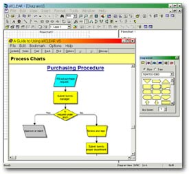

Process
Review and Improvement Office : Updates
PRIO
Busy Buddies
by: Teodoro M. Soliva, Jr.
While the Iraqi people are busy rebuilding their free country,
while the doctors are busy finding medicine to kill the dreaded
SARS disease, while the BIR employees are busy hiding their
ill-gotten wealth, the PRIO buddies are busy plotting their
work plans as another school year starts.
The Management Research project ensures that PRIO buddies
are occupied this school year as each one of us is assigned
parts of it for the different graduate and undergraduate colleges,
and faculty research centers in the university.
PRIO buddies are also hard at preparing Total Quality Management
trainings (Change Management, Customer Service, 5S, TQM Concepts
of Improvement, Problem Solving Tools and Techniques and Document
and Data Control) for the academic community. This includes
faculty, ASF, CAP and ASP of DLSU-Manila and PSI.
Finally, the e-Quality site was launched in June 3 through
the help of the DOCU people Joie, Rey and Francis. We hope
to enhance the site in the years to come through feedbacks
from the academic community.
Flowcharting...
Anyone?
by Joel G. Kisteria
In PRIO’s quest for the “right stuff” we
are constantly in search of flowcharting tools that can aid
the ITC, as well as the process owners, of the University.
Here are what we have recently come across with:
FlowBiz Procedure Charter - Standard and Professional
Cool feature: “autoflow” – allows the
user to convert text-based steps to flowchart procedure.
- There is a need to establish the titles for “performed
by” and create a template for this.
- Comes with a “report generator”. User can
design the type and format of reports that may be needed
and have it saved as a template. Users can simply activate
the report template and the accompanying reports are produced.
- The basic flowcharting tools and functions are available
(e.g., MS Visio).
- Assessment: This product is applicable if there are several
technical matters concerned. However, a vendor demo should
be scheduled so that the use of its features can be maximized.
AllClear Flowcharter
Cool feature: “diagram editor” – users
are given 2 choices in constructing the flowchart. They can
do it through creating the “diagram” or developing
the flowchart by typing the logical procedure with the “editor”.
Both functions can exist in the same window simultaneously.
This is an added attraction for the software.
- The basic flowcharting tools and functions are available
just like the old MS Visio software.
- Assessment: The “editor” function is quite
useful. Making use of it though is as complicated as creating
a computer program. Plus, the local vendor of the software
is no longer around. Still, we are searching for demo versions.
Still in progress:
- MS Visio 2002
- Process Revolution
- Paraben’s Flowcharter
- more to come?
|